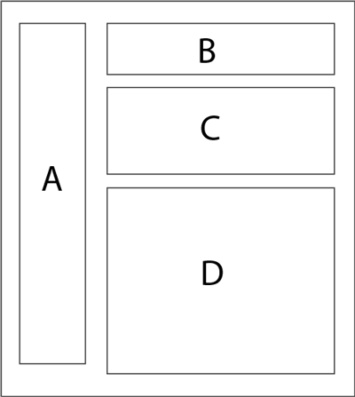

<px-card id="home-page">
  <article role="article">
    <h2 class="u-mt0 u-pt+">Dashboard Seed</h2>
    <div class=flex>
      <p>Use the Dashboard Seed to develop your own industrial monitoring application. The Dashboard Seed is both a tutorial and a template that gets you up and running quickly. It provides you with capabilities such as a contextual browser, data source control, UI elements integration, internationalization, and Cloud Foundry deployment support. Just click the link below to clone this project and begin coding... it's that simple!</p>
      <p class="u-1/6 u-m++">
        <a target="_blank" href="https://github.build.ge.com/Predix-Experience/predix-seed/releases" class="btn btn--large">
          <i class="fa fa-github"></i>
          Github Repo
        </a>
      </p>
    </div>
    <div class="flex">
      <p>
        Before you begin building an application please read the
        <a href="https://github.build.ge.com/PXd/px-getting-started" target="_blank">Getting Started Github repo.</a>
      </p>
    </div>
    <h3>How Do I Build an Application Using the Dashboard Seed?</h3>
    <p>Once you clone the Dashboard Seed, use it as a starter project, where you can add the features and functionality that you want, and delete what you do not need.</p>
    <div class="flex u-mv++">
      <div class="flex__item u-mr+">
        
      </div>
      <div class="flex flex--col flex--spaced flex__item">
        <div class="flex flex--middle">
          <h4 class="gamma u-mt0 u-mb0 u-mr+ weight--normal">A</h4>
          <div>
            <h5 class="epsilon u-m0">Navigation</h5>
            <p class=u-m0>
              View
              <a href="https://github.build.ge.com/pages/PXc/pxc-demos/bower_components/px-app-nav/index.html" target="_blank">APIs</a>
              &#38;
              <a href="https://github.build.ge.com/pages/PXc/pxc-demos/bower_components/px-app-nav/demo.html" target="_blank">Demo</a>
            </p>
          </div>
        </div>
        <div class="flex flex--middle">
          <h4 class="gamma u-mt0 u-mb0 u-mr+ weight--normal">B</h4>
          <div>
            <h5 class="epsilon u-m0">Context Browser</h5>
            <p class=u-m0>
              View
              <a href="https://github.build.ge.com/pages/PXc/pxc-demos/bower_components/px-context-browser/index.html" target="_blank">APIs</a>
              &#38;
              <a href="https://github.build.ge.com/pages/PXc/pxc-demos/bower_components/px-context-browser/demo.html" target="_blank">Demo</a>
            </p>
          </div>
        </div>
        <div class="flex flex--middle">
          <h4 class="gamma u-mt0 u-mb0 u-mr+ weight--normal">C</h4>
          <div>
            <h5 class="epsilon u-m0">Time Series</h5>
            <p class=u-m0>
              View
              <a href="https://github.build.ge.com/pages/PXc/pxc-demos/bower_components/px-time-series/index.html" target="_blank">APIs</a>
              &#38;
              <a href="https://github.build.ge.com/pages/PXc/pxc-demos/bower_components/px-time-series/demo.html" target="_blank">Demo</a>
            </p>
          </div>
        </div>
        <div class="flex flex--middle">
          <h4 class="gamma u-mt0 u-mb0 u-mr+ weight--normal">D</h4>
          <div>
            <h5 class="epsilon u-m0">UI Elements</h5>
            <p class=u-m0>
              <a href="https://github.build.ge.com/pages/PXd/px-library-design/" target="_blank">View Samples</a>
            </p>
          </div>
        </div>
      </div>
    </div>
    <h3>Glossary</h3>
    <ul class=list-bare>
      <li class=u-mb+>
        <b>Asset</b>
        : Any thing that has value of which your organization wants to track its condition, performance or health.
      </li>
      <li class=u-mb+>
        <b>Card</b>
        : An editable container that is composed by the application developer and resides within a larger container called a View.
      </li>
      <li class=u-mb+>
        <b>Components/Widgets</b>
        : Self contained portion of an application that is composed to serve a particular function.
      </li>
      <li class=u-mb+>
        <b>Context Browser</b>
        : Component providing an application the basis of what asset is to be analyzed or audited.
      </li>
      <li class=u-mb+>
        <b>Dashboard</b>
        : A data visualization tool that displays condition, performance and health metrics ( sometimes KPIs ) within a single view.
      </li>
      <li class=u-mb+>
        <b>Data Source</b>
        : The connectible location of information pertaining to the real world state of a facility or individual asset.
      </li>
      <li class=u-mb+>
        <b>Deck</b>
        : A series of Cards that are organized by the developer that may or may not have interactivity between them.
      </li>
      <li class=u-mb+>
        <b>Module</b>
        : Individual repository for Sass files and related UI Elements.
      </li>
      <li class=u-mb+>
        <b>UI Elements</b>
        : The individual pieces of a consistent visual language to represent items such as buttons, form fields, drop-downs and so on.
        <br>
        See more about
        <a href="https://github.build.ge.com/pages/PXd/px-library-design/" target="_blank">UI Elements</a>
        in the Predix Design System. See more about the <a href="https://github.sw.ge.com/pages/PDx/design-guidelines/" target="_blank">Design System</a>.
      </li>
      <li class=u-mb+>
        <b>Vertical Navigation</b>
        : Component which contains the global navigation located on the left of all screens.
      </li>
    </ul>
  </article>
</px-card>
